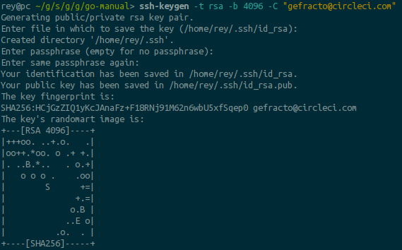

index
Table of Contents
- 1. Инструменты
- 2. Создаем новый проект
- 2.1. На гитхабе
- 2.2. Локально
- 2.2.1. Создаем директорию $GOPATH/src/github.com/yourgitname/yourproject и переходим в неё.
- 2.2.2. Со страницы QuickSetup git'a копируем команды, но не забываем добавить "git add .":
- 2.2.3. Ошибка команды git push
- 2.2.4. Генерируем ssh
- 2.2.5. Привязываем ssh к github
- 2.2.6. Повторяем git push, если первый раз не удался
Если ты не видишь эту надпись, значит, твой deploy не удался
Привет, %username%. Сегодня мы – следуя этому мануалу – задеплоим на хероку контейнер с этим мануалом. Такая вот рекурсия.
Отдохни, сделай кофе.
Приготовься.
Глубокий вдох.
Готов?
1 Инструменты
1.1 Linux
- Эмулятор терминала
1.2 Windows
- Git bash
ПОЕХАЛИ!
2 Создаем новый проект
2.1 На гитхабе
2.1.1 На github.com создаем новый репозиторий. Обзываем его именем вашего проекта.

2.1.2 Жмем Create
2.1.3 Попадаем на страницу QuickSetup, можно её пока оставить - там инструкции для инициализации локального проекта.

2.2 Локально
2.2.1 Создаем директорию $GOPATH/src/github.com/yourgitname/yourproject и переходим в неё.
В моем случае это:
mkdir ~/go/src/github.com/gefracto/go-manual cd ~/go/src/github.com/gefracto/go-manual
2.2.2 Со страницы QuickSetup git'a копируем команды, но не забываем добавить "git add .":
git init git add . git commit -m "first commit" git remote add origin git@github.com:gefracto/go-manual.git git push -u origin master
2.2.3 Ошибка команды git push
Возможно, ты увидишь такое же сообщение.
fatal: cannot run ssh: Нет такого файла или каталога fatal: unable to fork
Оно говорит о том, что нам нужно сгенерить ssh-key.
Даже если тебе удалось запушить, все равно выполни этот шаг - ssh-key нам ещё пригодится.
2.2.4 Генерируем ssh
Выполняем в терминале:
ssh-keygen -t rsa -b 4096 -C "gefracto@circleci.com"

Заметь, что команда заканчивается комментарием "-C "gefracto@circleci.com"". До символа @ - это твой git-логин. В дальнейшем этот комментарий понадобится нам для деплоинга на хероку.
2.2.5 Привязываем ssh к github
- Выполняем в консоли:
cat ~/.ssh/id_rsa.pub

Делаем ctrl+C этого мусора и идем на github.com.
- Переходим в настройки нашего репозитория, находим пункт Deploy keys

- Тыцаем "Add deploy key"
- В поле title вводим имя любимого кота или название проекта. Без разницы.
- В поле key вставляем скопированный ssh-мусор
- Не забываем отметить галочкой "Allow write access"

2.2.6 Повторяем git push, если первый раз не удался
git push -u origin master
УСПЕХ!